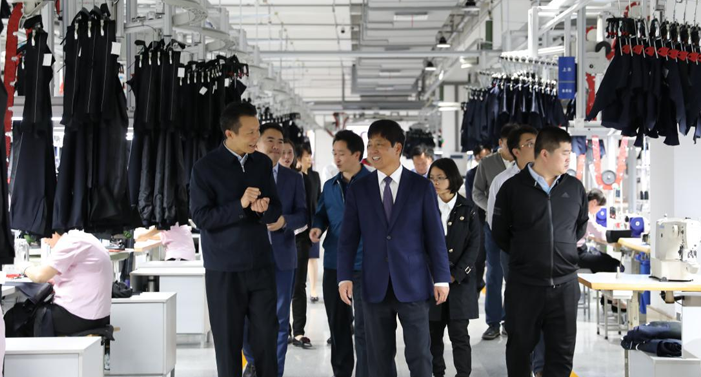

遵义市副市长鲁成军莅临考察
信息来源：：某某人
发布时间：2018-10-10

10月10日，遵义市副市长鲁成军到我司考察，市委常委、常委副市长陈仲朝等政府单位相关人员陪同。
鲁成军副市长一行参观了A座的智能车间，集团常务副总经理胡纲高向领导们介绍了我们公司在智能制造、智慧营销、生态科技三个方面的进度以及成效。随后，领导们参观了位于3楼的智能生产车间，全流程吊挂系统流水线，规范化的管理、标准化的生产等得到了领导们充分的肯定。